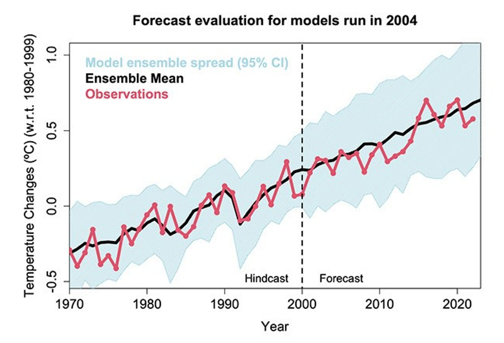
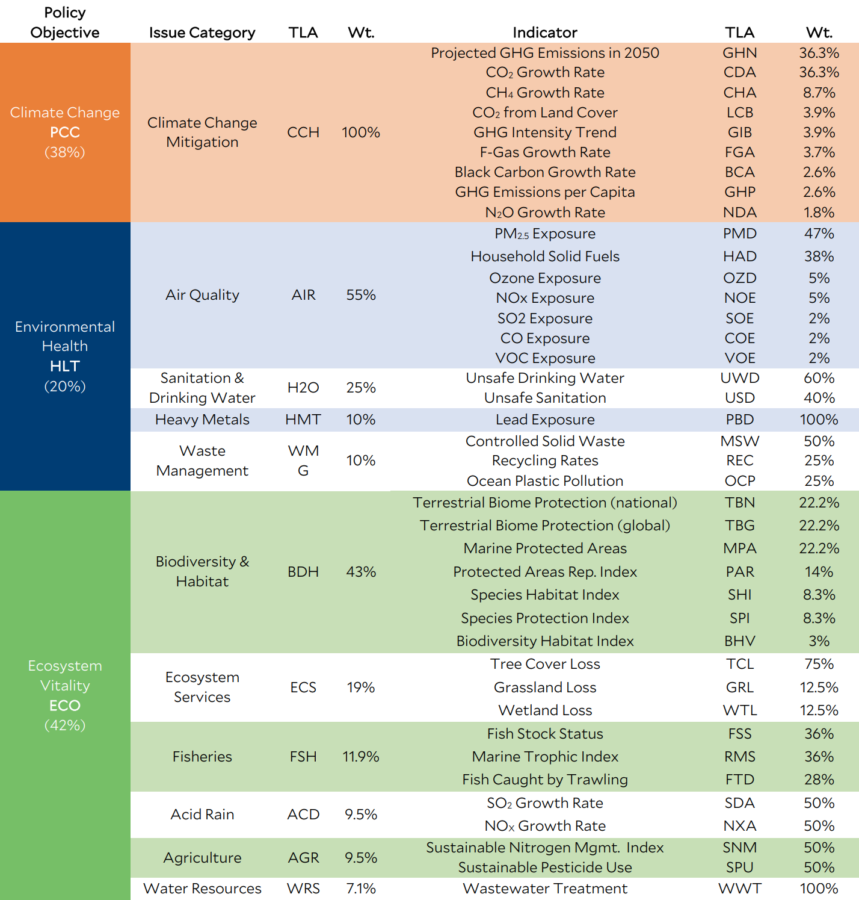

CSCI 5612 Machine Learning for Data Science:
Regional Climate Factor Analysis:
Introduction
The Regional Climate Factor Analysis project will focus on how numerous factors within different regions, largely separated by country, influence climate change in those regions. Climate change is more than just global warming; chemical changes, such as an increase in carbon dioxide, can also be important to observe. Climate change is also a global problem; however, local effects of climate change are variable, and many problems that contribute to climate change will also contribute to local atmospheric phenomena.
This analysis will be completed through the use of numerous data science methods applied to datasets collected from reputable sources, including NASA, the IPCC, and Open-Meteo. These datasets contain information about many ecological variables, some extra details about each country, climate model predictions, and climate observations. Through the combined usage of these datasets, analysis into the impacts of these ecological variables as well as the predictions of climate models can proceed.

(https://science.nasa.gov/earth/climate-change/study-confirms-climate-models-are-getting-future-warming-projections-right/)
The inspiration for this project began with questions about climate models. Many climate models exist, and are maintained by different organizations. These models are frequently combined into an ensemble, with the hope of improving accuracy in general. However, models are frequently tuned to best explain and predict phenomena local to the developers of the model. While this provides variety in an ensemble model to cover any weaknesses, this also means that some models will be better able to represent circumstances for certain areas. The results of these independent climate models can be important to policy makers from the region. Being better informed about the severity of climate change, including the factors that contribute to it as well as how it contributes to the local environment, can be critical to how eco-friendly initiatives are approached.

These variables will play a large part in future research.
The many variables shown above cover a wide range of ecological factors, but are not entirely independent of each other. The clearest examples of this are variables describing the amounts of pollutants and the rate-of-change of those pollutants. Combining these variables can result in new insights, however, such as finding that some areas currently have high amounts of a pollutant but are decreasing that amount. This could indicate that they have adopted more eco-friendly practices in broad or specific circumstances, and are now seeing the benefits of those changes. These patterns could also show worsening conditions, or many other more nuanced outcomes. The usage of these variables offers critical information about environmental factors that are not typically captured by weather-focused systems and models.
In addition to the variables made available by the EPI, the ND-GAIN Index is heavily considered for this project. This score is a representation of a country's vulnerability to and readiness for climate change. The score is computed by the Notre Dame Global Adaptation Initiative, but the methods used by them are not considered here. Instead, the interest is in attempting to predict the ND-GAIN Index using the EPI variables without needing to rely on the original inputs. Through this effort, new predictions can be made and provided to at-risk countries when some data is missing.
Q&A
• How do pollutants and ecological determinants influence climatic conditions across locations worldwide today?
Pollutants and similar ecological variables are generally tied to worsening climate change conditions; notably, many pollutants are also greenhouse gases that contribute to global warming.
• How have these same factors influenced climatic conditions across regions throughout the past?
Pollutants concentrations are primarily increasing, leading to the worst effects being most recent.
However, some countries are reducing their emissions of pollutants, meaning their exposure rates are improving.
• How do these influences vary by location?
This question is not particularly answerable, even with data to analyze.
Air pollutants in particular will move based on complex atmospheric phenomena, meaning that a country's current concentrations of pollutants is also heavily dependent on the countries near it.
Are there differences in severity based on factors such as latitude, distance to a coast, or prevailing winds?
• Do socio-economic factors of a country, such as its GDP, correlate to its emissions and general ecological impact?
How strong are the correlations, or how impactful are their absences?
There is a clear direct correlation between GDP and carbon dioxide emissions, as well as a less strong correlation with other pollutants.
This is likely due to higher GDPs being attained at the expense of more industry and technology producing harmful by-products.
• How accurate are climate models, including ensembles, in predicting global conditions in recent years?
They have respectable accuracy.
Using the ND-GAIN as a measure of global conditions, models were able to achieve approximately 80% accuracy in predicting a country's risk from climate change.
• How accurate are climate models in identifying patterns between countries' emissions and exposure rates?
Fairly accurate.
This is despite the available data being large-scale, rather than being granular enough to observe the specific emissions of various pollutants and the affected locations.
• How inaccurate are climate models in predicting conditions in systems with different conditions than the ones that they are specialized for?
Are the insufficiencies outweighed by improved performance in the local system?
This question was not directly addressed as part of this project, although it is touched on more in the Challenges tab.
This would require a much deeper analysis of the objective system of the EPI, as well as the construction of ensemble models.
• Do climate models perform best in recent years?
Do they fail to predict past conditions as well as they predict current conditions?
This question was not directly addressed as part of this project, although it is touched on more in the Challenges tab.
Simply put, data collection in the past was insufficient to be able to create reliable models.
• Do various climate models fail to predict similar conditions?
Are there groupings of models that can show underlying similarities, either in how they were constructed or in the circumstances that they are tuned for?
Yes.
Most notably, the decision tree model had a relatively poor F1-score compared to the other supervised models, but instead perfectly predicted whether a country was at high risk from climate change.
The gradient boosting model showed a similar propensity, but was also able to provide better predictive power in general.
• How much do ensembles of climate models improve accuracy overall?
How do ensemble models perform in areas that individual models are tuned for?
A strong amount.
The gradient boosting model performed best out of everything trained and tested.
It achieved the highest F1-score (as well as other metrics) and mostly maintained the high-risk predictive power of the decision tree model.